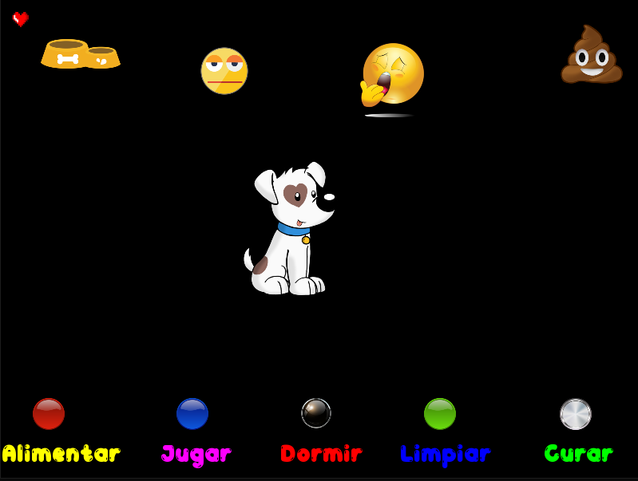

Sobre mí
¡Bienvenidos a mi portfolio!
Soy estudiante de la carrera Técnico Universitario en Programación en la Universidad Tecnológica Nacional, Facultad Regional Gral Pacheco. Realicé cursos dictados por Maxi Programa en donde comencé a interesarme por la rama del Desarrollo Web. Actualmente estoy haciendo un curso en Udemy, dictado por Código con Juan en donde vemos HTML, CSS, SASS, Workflows, JavaScript, Fetch (Antes AJAX), PHP, POO - MVC, MySQL - SQL y API's. Tengo muchas ganas de seguir aprendiendo y postularme a posiciones Trainee.
Mis Proyectos
El Gran Cerdo
Juego de azar con programación estructurada en C++.
Tamagotchi
Mascota virtual con POO en C++, utilizando SFML.
Catálogo en Aplicación de Escritorio
Aplicación hecha en C#(WinForms), con POO, .NET, SQL.
Catálogo en Aplicación Web
Aplicación hecha en C#(WebForms), con POO, ASP, .NET, SQL, HTML, CSS.
Freelancer
Sitio web realizado con HTML y CSS.
proyecto 1

contando proyecto 1
proyecto 2
contando proyecto 2
proyecto 3
contando proyecto 3
proyecto 4
contando proyecto 4